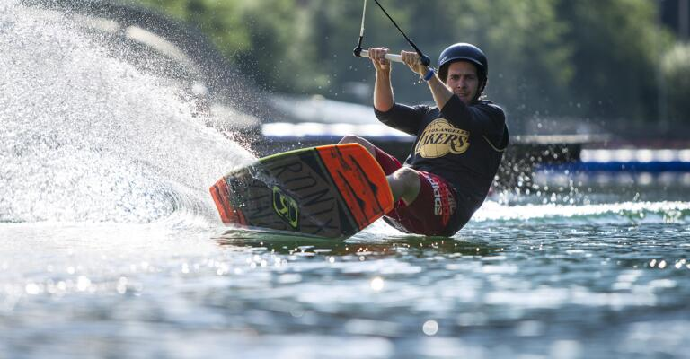

кайтсерфинг
Из всех видов спорта, возникших на стыке воды и воздуха, этот, пожалуй, является наиболее сложным. Чтобы заняться им требуются воздушный змей, доска серфера, ветер и волны. Но только здесь в воздухе находится более профессиональное устройство, получившее название кайт. В результате своего перемещения кайтсерфер может не только скользить по волнам, но и взлететь в небо. Здесь ценится не только красоту показанного трюка, но и дальность прыжка с волны.
Кайтсерфинг кажется довольно современным экстремальным развлечением, ведь воздушные змеи привычно использовались по иному назначению. Однако на самом деле что-то подобное практиковалось в Китае в далеком XIII веке. Там лодки скользили по волнам благодаря привязанным к ним веревками парусам - по сути тем же воздушным змеям. Сегодня связка "доска-змей" претерпела определенные технические изменения.
Настоящим прорывов для кайтсерфинга стал приход сюда рекламодателей, которым понравилась идея размещения своих рекламных слоганов на кайтах. За последние 20-30 лет количество смело молодежи, готовой бросить вызов ветру и волнам, увеличилось в двадцать раз. Сегодня кайтсерферов можно увидеть не только в теплых водах Гавайских островов, Флориды и Калифорнии, но и по всему миру, включая и Финский залив. Часть трюков, которые тут демонстрируют спортсмены, пришли из скейтбординга (вращение, захват и другие).

Ничто не мешает освоить их еще на суше. Правда на воде трюк заметно усложнится, ведь основа будет довольно зыбкой, а змей будет дергать доску сильными рывками. В результате даже обычный прыжок с приземлением может показаться непростым испытанием. Однако основам кайтсерфинга можно научиться довольно быстро, за 2-3 недели. После чего останется только устремиться навстречу рекордам. К примеру, совершить французский райд длиной в 200 километров вдоль Лазурного побережья со средней скоростью в 38 км/час. Абсолютный же рекорд скорости в данном спорте составляет около 90 км/час, этим рубежом кайтсерферы гордятся особенно - ранее так быстро моли перемещаться только лодки и виндсерферы.
В России проводится даже Чемпионат страны по данному виду спорта. Его этапы проводятся в Ростове-на-Дону, Петербурге и черноморском побережье. Случаются выездные сессии в Египте и Турции. Обычно именно в отпуске и происходит приобщение к кайтсерфингу. Но может оказаться, что первый опыт так затянет, что одного отпуска в год будет до обидного мало.